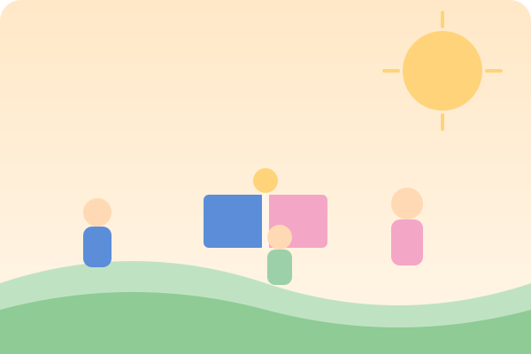

Merawat Harapan, Mendampingi Para Pejuang Kecil
Dashboard ini merangkum perjalanan pendampingan anak-anak yatim & piatu binaan Pejuang — mulai dari data pendidikan, bantuan yang tersalurkan, hingga prestasi dan dokumentasi kegiatan. Disusun otomatis dari data terbaru, dengan identitas anak-anak yang tetap dijaga privasinya.
🔒 Data disamarkan demi privasi anak
⚙️ Update otomatis via Python + GitHub Actions

Statistik
Sebaran & Profil Anak Asuh
Gambaran umum jenjang pendidikan, gender, status, dan wilayah dampingan.
Jenjang Pendidikan
Proporsi Gender
Status Yatim / Piatu
Wilayah Dampingan
Bantuan per Kategori
Tren Bantuan Bulanan
Anak Asuh
Daftar Pejuang Kecil (0 anak)
Nama ditampilkan sebagai nama depan saja, dan avatar berupa ilustrasi — bukan foto asli — untuk menjaga privasi anak sesuai kebijakan program.
Prestasi
Jejak Prestasi Para Pejuang
Pencapaian anak-anak binaan di berbagai tingkat kompetisi & kegiatan.
Dokumentasi
Galeri Kegiatan
Momen kebersamaan & kegiatan pendampingan (foto dokumentasi kegiatan, bukan foto identitas individu anak).